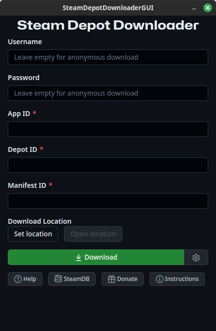

About SteamDepotDownloaderGUI
Steam Depot Downloader GUI is a user-friendly interface for downloading Steam depots. It's easy to use, efficient, and reliable. It works on Linux, Windows and soon macOS!
How to use:
InstructionsHow to Download
Click the download button below to get the latest version of Steam Depot Downloader GUI.
